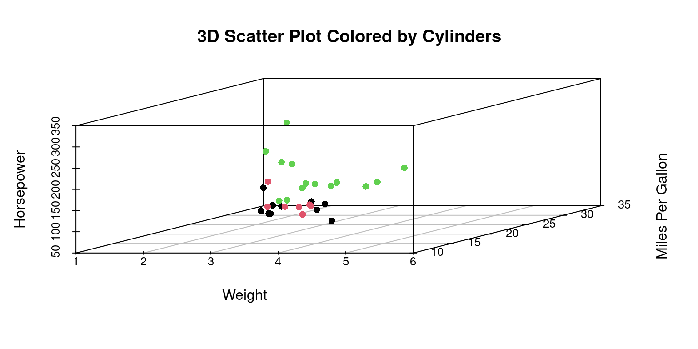

# Load the required libraries for 3D plots, suppressing annoying startup messages
library(scatterplot3d, quietly = TRUE, warn.conflicts = FALSE)
library(rgl, quietly = TRUE, warn.conflicts = FALSE)16: Three Dimensions (3D)
Oct 01, 2023
Overview of R packages for 3D Plots
This chapter demonstrates how to create 3D plots in R.
ggplot2
The ggplot2 package in R is primarily designed for creating 2D plots. However, we can simulate 3D effects, even though it won’t provide true 3D plots
scatterplot3d
The scatterplot3d package in R can be used to create 3D scatter plots. It is quite simple to use and can be a good choice for quick visualizations.
rgl
The rgl package in R is a powerful tool for creating interactive 3D plots. It allows real-time interaction with the plots, where users can zoom, rotate, and pan the visualization to explore the data in three dimensions. This package provides various functionalities to create a variety of 3D plots, including scatter plots, surface plots, line plots, bar plots
Data: Suppose we run the following code to prepare the mtcars data for subsequent analysis and save it in a tibble called tb.
# Load the required libraries, suppressing annoying startup messages
library(dplyr, quietly = TRUE, warn.conflicts = FALSE)
library(tibble, quietly = TRUE, warn.conflicts = FALSE)
library(ggplot2, quietly = TRUE, warn.conflicts = FALSE) # For data visualization
library(ggpubr, quietly = TRUE, warn.conflicts = FALSE) # For data visualization
# Read the mtcars dataset into a tibble called tb
data(mtcars)
tb <- as_tibble(mtcars)
# Convert relevant columns into factor variables
tb$cyl <- as.factor(tb$cyl) # cyl = {4,6,8}, number of cylinders
tb$am <- as.factor(tb$am) # am = {0,1}, 0:automatic, 1: manual transmission
tb$vs <- as.factor(tb$vs) # vs = {0,1}, v-shaped engine, 0:no, 1:yes
tb$gear <- as.factor(tb$gear) # gear = {3,4,5}, number of gears3D Plots using ggplot2
The ggplot2 package in R cannot create true 3D plots. Here is how to simulate a 3D plot using ggplot2.
Simulating 3D using ggplot2
# Load necessary library
library(ggplot2)
# Create a scatter plot with the perception of depth using size and color
ggplot(tb,
aes(x = wt,
y = mpg,
color = hp,
size = hp)) +
geom_point(alpha = 0.6) +
scale_color_gradient(low = "blue", high = "red") +
theme_minimal() +
labs(title = "3D Effect Scatter plot", x = "Weight", y = "Miles Per Gallon", color = "Horsepower", size = "Horsepower")Discussion:
The code provided simulates a 3D plot by exploiting visual cues and perceptual aspects of human vision. It uses the following strategies to simulate depth and give the perception of a three-dimensional plot on a two-dimensional surface:
Size Encoding: The
size = hpaesthetic in theaes()function maps thehp(horsepower) variable to the size of the points in the scatter plot. Points representing cars with higher horsepower appear larger, while those with lower horsepower appear smaller. This varying point size provides a depth cue, simulating the z-axis on a 2D surface.Color Encoding: The
color = hpaesthetic assigns different colors to the points based on their horsepower values. Thescale_color_gradient(low = "blue", high = "red")function further specifies that lower horsepower should be represented with blue, transitioning to red for higher horsepower. The gradient color scale serves as another depth cue, indicating that points of different colors are at different ‘depths’.Alpha Transparency: The
alpha = 0.6parameter in thegeom_point()function adjusts the transparency of the points. This transparency allows for better visibility of overlapping points, giving a sense of depth where points are clustered.Axis Mapping: The
x = wtandy = mpgwithin theaes()function map the weight of the cars to the x-axis and the miles per gallon to the y-axis. These two axes represent the spatial dimensions on the plotting surface.This plot has similarities to the classic bubble plot. The application of a color gradient gives the illusion of 3D.
By combining these elements, the plot employs size, color gradient, and transparency to introduce visual cues of depth, effectively simulating a 3D effect on a 2D plotting surface. This enables the viewer to infer relationships among
wt,mpg, andhp, even though the plot itself is inherently two-dimensional.
3D Plots using scatterplot3d
The *scatterplot3d** package can be used on the mtcars data to demonstrate visualization in 3 dimensions.
library(scatterplot3d)
# Create a 3D scatter plot using the tb tibble
sp3 <- scatterplot3d(x = tb$wt,
y = tb$mpg,
z = tb$hp,
xlab = "Weight", ylab = "MPG", zlab = "Horsepower",
pch = 16, color = "blue",
main = "3D Scatter Plot of mtcars")Discussion:
x = tb$wt,y = tb$mpg, andz = tb$hpare used to map thewt,mpg, andhpcolumns from thetbtibble to the x, y, and z axes of the 3D scatter plot respectively.- The
xlab,ylab, andzlabparameters are used to label the x, y, and z axes. pch = 16specifies the type of point to be used in the plot.color = "blue"sets the color of the points to blue.mainis used to set the title of the plot.- Overall, this code visualizes a 3D scatter plot demonstrating the relationships between
wt,mpg, andhpin themtcarsdataset.
Variations of 3D Plots using scatterplot3d
Here are some variations and extensions of the original scatterplot3d code to demonstrate the versatility of 3D visualizations:
Color by a Variable:
We can color points by a variable, for example, by the number of cylinders (cyl), which can reveal additional patterns in the data.
library(scatterplot3d)
sp32 <- scatterplot3d(x = tb$wt, y = tb$mpg, z = tb$hp,
color = as.numeric(tb$cyl),
pch = 16,
xlab = "Weight", ylab = "MPG", zlab = "Horsepower",
main = "3D Scatter Plot Colored by Number of Cylinders")
- We can add a legend for the color in the
scatterplot3dplot by using a combination of thelegendfunction and thecolorsargument.
library(scatterplot3d)
# Define a color palette
color_palette <- rainbow(length(unique(tb$cyl)))
# Create a scatterplot3d and specify colors by the number of cylinders
sp33 <- scatterplot3d(x = tb$wt, y = tb$mpg, z = tb$hp,
color = color_palette[as.numeric(tb$cyl)],
pch = 16,
xlab = "Weight", ylab = "MPG", zlab = "Horsepower",
main = "3D Scatter Plot Colored by Number of Cylinders")
# Add a color legend
legend("right",
legend = unique(as.character(tb$cyl)),
fill = color_palette,
title = "Cylinders")Discussion:
- We defined a color palette using the
rainbowfunction based on the number of unique cylinder values intb$cyl. - We then used this color palette to color the points in the scatter plot.
- Finally, we used the
legendfunction to manually add a color legend to the right of the plot. Thelegendfunction takes the unique cylinder values as the labels for the legend and the colors from the color palette as the fill colors. The title of the legend is set to “Cylinders”.
Change Point Style:
We can change the point style to better distinguish between data points.
# Create a scatterplot3d and specify point shapes by the number of cylinders
sp34 <- scatterplot3d(x = tb$wt, y = tb$mpg, z = tb$hp,
pch = as.numeric(tb$cyl),
color = "blue",
xlab = "Weight", ylab = "Miles per Gallon", zlab = "Horsepower",
main = "3D Scatter Plot with Different Point Styles")
# Unique cylinder values and corresponding point shapes
cylinders <- unique(tb$cyl)
shapes <- as.numeric(cylinders)
# Add a legend for point shapes
legend("right",
legend = as.character(cylinders),
pch = shapes,
title = "Cylinders")Discussion:
This R code visualizes relationships among the
wt,mpg, andhpcolumns from thetbtibble, with points having different shapes based on the number of cylinders (cyl).Creation of 3D Scatter Plot
sp34 <- scatterplot3d(...): This line initializes the creation of a 3D scatter plot and stores the result in thes3dvariable.x = tb$wt, y = tb$mpg, z = tb$hp: These arguments define the variables that will be plotted on the x, y, and z axes, respectively.pch = as.numeric(tb$cyl): This argument specifies the point shape (pch) to vary based on thecylcolumn, with different cylinders represented by different shapes.color = "blue": All points are colored blue.xlab,ylab,zlab: These arguments label the axes of the plot.main: This argument provides the main title of the plot.
Determination of Unique Cylinder Values and Shapes
cylinders <- unique(tb$cyl): This line identifies the unique values in thecylcolumn and stores them in thecylindersvariable.shapes <- as.numeric(cylinders): The unique cylinder values are converted to numeric form to determine the corresponding point shapes, which are stored inshapes.
Addition of Legend
legend("right", ...): This function is used to add a legend to the right of the plot.legend = as.character(cylinders): This argument defines the labels of the legend, which are the unique cylinder values converted to character strings.pch = shapes: The point shapes corresponding to the unique cylinder values are used in the legend.title = "Cylinders": The title of the legend is set as “Cylinders”.
By executing this code, we get a 3D scatter plot with points having different shapes based on the number of cylinders, and a corresponding legend clarifying the representation of each shape.
Highlight Specific Points:
We can can highlight specific points, for example, cars with 4 cylinders, by changing their color or size.
sp35 <- scatterplot3d(x = tb$wt, y = tb$mpg, z = tb$hp,
pch = 16,
color = ifelse(tb$cyl == 4, "red", "blue"),
xlab = "Weight", ylab = "Miles per Gallon", zlab = "Horsepower",
main = "3D Scatter Plot Highlighting Specific Points")Add Regression Plane:
We can can fit a linear regression model and add the regression plane to the scatter plot.
library(scatterplot3d)
sp36 <- scatterplot3d(x = tb$wt, y = tb$mpg, z = tb$hp,
pch = 16, color = "blue",
xlab = "Weight", ylab = "Miles per Gallon", zlab = "Horsepower",
main = "3D Scatter Plot with Regression Plane")
# Fit a linear model and add a regression plane
model <- lm(hp ~ wt + mpg, data = tb)
sp36$plane3d(model)Discussion:
- This code snippet is used to create a 3D scatter plot and then fit a linear regression plane to the plotted data points.
- Fit a Linear Model
model <- lm(hp ~ wt + mpg, data = tb): A linear model is fitted using thelmfunction withhpas the dependent variable andwtandmpgas the independent variables. The resulting model object is stored in the variablemodel.
- Add a Regression Plane to the Plot
sp36$plane3d(model): Theplane3dfunction is accessed from thes3dobject and is used to add a regression plane to the existing 3D scatter plot. The plane is based on the coefficients of the linear model stored inmodel.
- The resulting output will be a 3D scatter plot visualizing the relationships among weight (
wt), miles per gallon (mpg), and horsepower (hp), with a regression plane fitted to these points, representing the linear relationship between the dependent and independent variables.
Summary
References
[1] Everitt, B. S., & Hothorn, T. (2014). A Handbook of Statistical Analyses Using R. Chapman and Hall/CRC.